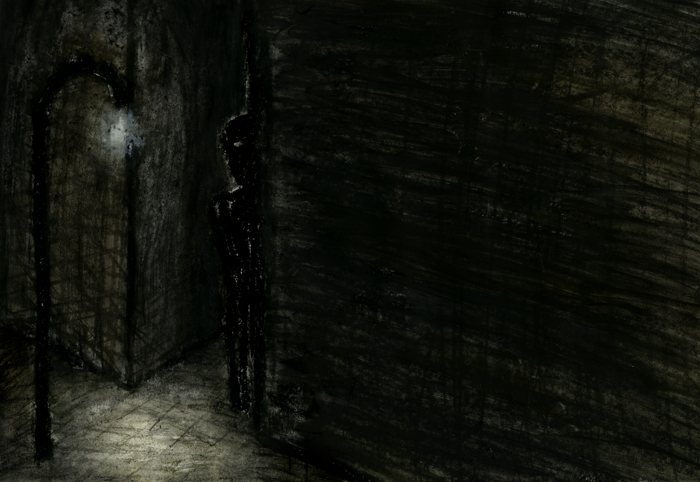

Lazarus Shadow
I recently was assigned to write a tragedy for AP literature. This is the story I wrote.

Part One
Admiral Davon was not a politician in the traditional sense. True, he was an elected official, though the fact was quite peculiar. He did not campaign, nor did he associate himself with any party, or ideology. In truth, he did not desire office, he was a military man, better suited to command the seas than the police. Yet he was Coordinator of Law; the people seemed to demand it, and he would not deny the people.
He was hailed as a hero, though he did not believe as much. He had done only as he knew he must. “tireless work for tireless people,” that was his motto, and tireless was one thing he certainly was. Admiral Daven: the only man to make admiral by the age of 36. The Young Poseidon, Captain of the Andrella, hero of New Palm: so the people spoke of him. He was admiral only briefly before being elected, and he kept the title as a sort of keepsake, a small token of pride for a modest man. In truth, he could feel no pride. He had yet to do everything he could for his country, and that was what he was determined to do, no matter what. And so it was that he, knowing nothing of politics and even less about law enforcement, attained the second most powerful position in the country, and with it, one hell of a problem.
“Repeat that for me, slower” The Admiral did not like how the deputies spoke. It was too fast, and too jumbled. “There is a riot in Tels, sir. The Governor has asked for our assistance.” Davon frowned. Riots were a common occurrence, but rarely did they grow too large for the local authorities, and rarer still in Tels. “Dispatch the enforcers then.” Davon’s response was dry, he had not slept. However, his consciousness quickly caught up with the severity of the situation. “Make sure you send only our top units. I want this done quickly. I assume I don’t have to explain the importance of Tels’s Industry.” The message was clear. “No, sir. Right away, sir.” Of course the deputy understood. Tels produced over half the nation’s steel. “You are dismissed.” The deputy left. “Curse that Levi Harold.” Harold was the economic coordinator, and, as the admiral was oft to say, he like to run the economy like a filing cabinet. The admiral was no economist, but at least he knew not to put all his powder on one ship. “I had better call him” he thought. After all, this riot was not the only issue he had to deal with.
One week prior, the admiral had met with Harold about a certain “situation.” “Embezzlement you say?” The admiral was not particularly impressed, such cases were common. “Yes, there is no question of it now. US Steel has over a hundred million dollars unaccounted for. They say it has been going on for months.” Levi’s speech was organised and clear. Much like his office. There were no stray papers on his desk, no decorations either except for a simple pendulum. Its consistent swing seemed to keep steady the flow of time. “They can’t trace it?” Levi responded “They wouldn’t have called us if they could. Whoever it is, they are incredibly clever. That’s why I think your department should investigate this.” This made sense. The department of economics had their own investigators, but they were known to be inept. The top dogs all went into law. “This will have to be kept quite obviously. The press, you know.” Daven understood “I will oversee it personally.” “Perfect” Levi cracked a smile, “good to see you old friend.” The admiral turned to leave. “Likewise”
That had been one week ago. Daven’s fingers punched in Harold’s number, the phone rang, a secretary picked up. “Hello… yes, this is the Admiral… went home for the night?… yes, all right, just tell him that we have a situation and that it involves him.” It did not matter. He would know about it by tomorrow anyway.
The night and morning had passed and the admiral was just finishing an interview with an executive from US Steel. The questions were mainly focused on the technical details of their banking system, to which Mr. Crieger generally responded “Hell if I know, I’m not the damn technician,” which left the Admiral with about as much information as he had going in. However, they were about to leave when one last question occurred to Daven. “One thing seems odd to me. You pay your workers well. Why do they strike?” Mr. Crieger answered defensively, “It’s that damn missing money. The payroll accounts were all emptied right before we paid the workers. Fourth time that’s happened; workers suspect us of cheating em.” The admiral was taken aback. “I wasn’t told it was so precisely planned.” “I’m tellin ya,” said Mr. Crieger “who ever it is is one clever sonofabitch. We would go to pay the workers, and the money is wired in transfer, and we are none the wiser.” Daven cut him off. “Until the workers complain.” “Naturally.” There was a brief pause as the admiral considered this. He responded absently. “It’s almost as if the guy was trying to start a riot.” Mr. Crieger seemed confused: “Well what would they want that for?” What indeed, thought Daven.
3 hours later the admiral was at the capital data banks, shifting through personal files. US steel had no direct competition, and few enemies. Even a slight disruption in their production would affect the nation as a whole, there was no benefit in starting a riot, unless disruption was the goal. His eyes caught a name. “Nicholas Lazarus.” Of course he knew the name. Everyone did. He was perhaps the most destructive terrorist who had ever lived, and certainly the most clever. He was infamous, of course, for the bombing of Capital Tower. In a single second, the capitol building along with half the federal government had been entirely annihilated. Outside the colossal steel frame of the new tower stood exposed, a reminder that though a decade had passed, it was still long from over. It was necessary that the building be finished. Though it was only a small country, the capital tower was a symbol of strength. Once it was restored, so would the people’s faith in their government.
Daven’s eyes scrolled to the side. “(Deceased).” The police had not found Lazarus. He had found them. He walked into right into the police station. Drew a gun. Shouted “Goodnight my friends.” And ended it there. This was common knowledge as well. It had been in the papers for the whole of two weeks. No one quite understood the reason. Most assumed the he had completed his purpose and decided to play one last prank on the human race. Daven was uncertain. Could he have faked his death? It was impossible: the police themselves had been his witness, and genetic evidence confirmed his identity. But Lazarus was clever. He could have pulled it off. And right under our noses!, We would never doubt that…. The admiral stopped himself. “This is nonsense” He spoke aloud to himself. “Lazarus is dead, that is certain. No one is that clever.” A seed of doubt remained in the Admirals mind.
Lazarus One.
It was dark in the room, but one could just make out that it was a small, one bedroom apartment. It was quite normal aside for the fact that the door was kicked in, and the window smashed. There were two men in this apartment. One was a doctor. He was on his knees facing the wall, his eyes wide with fear. A flashlight shined on his back.
Lazarus spoke softly.
Do you fear me, Doctor, there is no need for fear. I can not harm you.
The doctor cowered instinctively: if he were certain of only two things, it was that this man could harm him, and that he was definitely afraid of him. He did not understand, he had done all he was asked. The money was transferred. 50% for him, 50% for his employer. He was no liability, certainly they understood that? He looked to lazarus: he was grinning.
That is not to say, however, that you will leave this room alive.
Part Two
Daven watched a deputy enter his office. “Mr. Coordinator…” “Admiral” he corrected. “Sorry, Admiral, a body has been found. It has been identified as Dr. Philip Grendel - an employee of US Steel, sir.” The admiral was interested now. “You believe he is related to our embezzling case?” The deputy’s response was full of excitement. “We know sir, all the evidence was found in his apartment, sir.” “Suicide?” Daven questioned. “No, the shot was to the back. We figure he had a partner.” The admiral was excited now. It was him. It had to be. Lazarus had faked his death, and was planning something, he didn’t know what, but something. “Alright, from this moment forth I will personally be in charge of this case. I expect you to keep me informed of all leads, and refrain from action without consulting me.” I will catch this guy if its the last thing I do.
About twenty-four hours later, The admiral came out of the interrogation room, he was drenched in sweat, and irritated beyond belief. Daven had been interrogating a certain Daniel Anton. The police had arrested him for inciting rebellion, though in reality he was simply at the front of the riot. For four hours the admiral had hammered him: what was his goal? who was he working for? Daniel had answered consistently and with growing irritation that he wasn’t working for anybody, and after four hours, the admiral gave up. “The nut won’t crack. Won’t admit to any connections, and insists he had no plans to incite rebellion.” The deputy looked puzzled. “What do you suspect him of?” The admiral frowned, he knew the young deputies were a bit slow, but not this hopeless. “Obviously this isn’t a coincidence. It was planned. Daniel had a purpose in starting this riot, and he had friends. We need to find out where those friends are hiding.” The deputy was doubtful “How do you intend to do that?” The admiral thought for a minute. A grin came across his face as he got an idea. “Let him go. He knows we are onto his scheme, but once he feels safe, he will lead us to Lazarus.” The deputy was even more confused. “Lazarus, what are y…” The admiral interrupted. He was giddy with excitement. “Never mind that. Just release him, have your best investigators follow him.” The deputy responded with hesitation “Whatever you say, Admiral.”
The admiral returned to his office. After briefing those who would be following Daniel, the deputy entered the interrogation room. “Get up, it is time for you to leave.” Daniel looked strangely at the deputy. “I am free to go?” “Yes, I do not know why, but you are indeed free.” The deputy lead Daniel out of the room. “I was worried; your Great Admiral seemed to suspect me of conspiracy.” “I would bet he suspects us all! Now be gone. Make trouble elsewhere if it suits you. But not here. Plague me no further!” The deputy pushes Daniel out the door. He sighed heavily, “Inspector Davis, you know your instructions.” “Aye, sir” The deputy felt slightly embarrassed. “I apologise, to task you with this foolishness is an insult.” Davis noticed Daniel through the window, he was turning to leave. “It is all fine, but I see our man is leaving now, I must follow him.” “Thank you, inspector.” Davis and his officers left the building.
Part Three
“Sir, we have lost track of the Daniel.” The admiral looked up. “We had our best guys on it, but he seemed to know he was being fallowed. He lost us somewhere in the center district.” Daven’s expression turned to malice. “Why is it that I am surrounded by incompetence? Lose him? You had at your disposal the whole of this nation’s police force, and yet you lose him, a single man! Do you comprehend the significance of this failure. Do you not see that the whole of this nation is at risk here.” The deputy backed away slightly, his tone was defensive, but hinted fear. “Admiral, we had our best men on it. He was in a crowd, sir. Surely you don’t expect…” “I expect them to be able to do their jobs. If they can’t do it, then I guess I have no choice but to bring the military in on this.” The deputy was now as angry as the admiral. “With all due respect, Admiral sir, we ar…” “Don’t use that tone with me, do not forget your position. You will transfer all case files to the military intelligence bureau, and you will fire all officers who were tasked to follow Daniel Anton.” The deputy would endure no more. “I will not.” The Admiral’s teeth were clenched, he ground them as he spoke. “Very well then, I will just have to get someone else to do it. As for you, you have until the end of the day to clean out your desk. Do you understand deputy.” The deputy looked at the Admiral with both contempt and pity. “I understand, Admiral, I understand completely!” He stormed out of the room. The Admiral yelled something unintelligible after him.
Three days passed. Nothing, no leads, no progress. The only development was that the riot, far from being suppressed, had spread to two neighboring cities, and it was now reaching the edge of the capitol. Work on Capitol Tower had already been suspended: they could not import enough steal. The admiral was suspicious, the failure of the police and the secret police could only indicate one thing, that there were traitors among them. He knew the Deputies were just stupid, but the Military? No, those in charge of the investigation bureau were good men, and he had known them all too long to believe they would betray their country. But they were not incompetent either. Lazarus had someone on the inside, keeping the investigation off his tail. “We have been playing right into his hand!”
Daven looked up at three deputies. “Where are the others.” He demanded. The first deputy spoke up. “Well sir, you fired Harvey, and John, Michael and Travis quit. So that leaves us.” “Never mind that. What news have you.” The second deputy spoke “It is not good news, sir, you will not like it, but it concerns us all, so we have chosen to bring it together.” “Speak it then.” The final deputy swallowed and said “There is commotion around Capitol Tower, It seems the city will soon be engulfed in riot.” Daven considered this, and came to a conclusion. “Good, we can use this. The riot is all part of his plan, but it will lure him out.”
The first deputy was in shock. “But sir, we must contain the riot, the city will be destroyed.” The admiral began to yell. “Are you stupid. If that building comes down the whole country will be destroyed. Stopping Lazarus is our top priority.” “But sir.” The deputy was indignant. “Shut up, and do as I say, or all fire the lot of you as well.”
“Enough Daven!” Harold spoke up from the corner. “This has gone on long enough.”
“You have been neglecting your responsibility, and you have allowed a riot to sweep through the nation.”
“Our responsibility, is to protect that tower. That means catching Lazarus at all costs. Do you hear.”
“Lazarus is dead Daven, he has been for over a decade. That isn’t going to change.”
“Surely you aren’t that foolish. He fake his death and now he returns to plague us again.”
“This is nonsense, Daven.”
“The only nonsense is that a wise man does not see the obvious. I do not believe it, it can only be that you have sided with the devil. Either you will see sense, or I will assume you a conspirator.”
“There is no sense to see here, only a man blinded by his ego.”
Daven spoke at the deputies. “Arrest this man, he is a traitor and a fiend.”
“I am your your friend.”
“Maybe once, but no more. You have sold out to the villain. You are my enemy also.”
He turned to a deputy. “What are you waiting for, I said arrest this man.” The deputy looked hesitantly from Levi, to Daven: he was caught between two of the most powerful men in the country.
“Go ahead officer, this will all be resolved in time.” Harold looked back to the admiral, his voice was like ice. “You are chasing shadows, Admiral. Shadows don’t pay well: not in bribes and not in bounty.” Harold was lead out of the room.
Lazarus Two
Lazarus looked down upon the crowd. They bared torches with their hands, and discontent on their faces. Lazarus looked down on them from the top of a small shop.
Friends, Romans, Countrymen lend me your ear,
For I have much to say to you.
But Brutus should have naught to fear,
For to rebellion, I cannot move you.
He grinned, and a snicker passed his lips. The crowd milled. The were many yells. Someone pointed toward the shop.
But I do suppose a riot would be rather nice.
Do you agree. For you look it certainly.
Armed with clubs and other tools of human brutality.
And armed last, not least, with me.
His grin grew, and he laughed like a madman. The crowd was boiling, they waved their crude weapons in the air. Lazarus yelled into the wind, and his voice pierced the air over the entire mob.
Go forth and lay waste.
Decimate this worthless place.
Show them all your discontent.
And make those men of office repent!
The crowd burst into a frenzy.
Part Five
Harold look quite dignified against the backdrop of the cell walls. It was late in the night, there were few officers around, and Harvey (the Deputy whom Daven had fired) had been able to infiltrate the jail with relative ease. It helped that the guards still saw him as their boss. The former deputy whispered through the bars.
“Sir, I have done as you asked.”
Harold responded “And?”
“The Coordinator of Military will listen to what we have to say.”
“Good, I am sure then that he will support us.”
“As would any rational man.”
“Is he coming here”
“Yes, we must meet him, I know the time and place. But we must be quick.”
“Then it is necessary I escape.”
The deputy retrieved a metallic Item from his pocket. “I have the key.” He unlocked the cell. Harold crept out as silently as possible. They made it to the door unseen, and entered the midnight air. The sky was clear, but their was a strong breeze like a storm. The deputy smiled. “At last this shall be resolved.” Harold shook his head. “Somehow I think this tragedy can have no resolution.”
Part Six
Admiral Daven looked across the room. There, once again, was Levi Harold, though this time he came with the support of Several armed soldiers, and the coordinator of the military. Daven looked at Levi; he did not see a close friend, but a sworn enemy. “Give up Daven. You have been removed from power. This has no doubt been a fun game for you to play, but it is over. There is too much at stake.”
There was a certain tension in the air of the room. All three of the most powerful men in the nation were present, and although it was clear who was in control, to the common man it would have appeared a battle of the giants. When Daven finally spoke it was with a fury unlike any other. “Traitors and Fiends! Do not come to me with your lies. You have been corrupted by Lazarus. I will not be fooled by this sham.”
It was Harold who responded. “Believe what you will, it makes no difference. The city has been engulfed in riot under your watch. You have proven yourself incompetent.” “Fools, The riot is but a distraction. Lazarus plots to destroy again our Capitol Tower, the crown of our country. By nightfall it will be in ruin.” Daven looked around at the group of men allied against him. He turned to the military coordinator, “General, you are a man of the military, the defense of this nation is your top priority. Surely you will not side with this crook!” The General looked sullen. “I’m sorry Admiral, but he is right. You are not thinking straight. Please just come with us. It will be easiest this way.” Daven could not accept this. “It is you, not I, who is insane. You have all been deluded by evil. You will bring this nation to its knees. ”
One of the guards looked toward the window: Daven saw his chance for escape. “I will save this country tonight. You will not prevent me. Lazarus shall not win again.” Daven ran out of the room. A guard turned to follow, but was stopped by Harold. “Let him go, he has done all the damage he can do. He may come to his senses, or he may not, but we have more important matters to attend. We will find him in the morning.”
The was raining outside, it hit the ground loudly. The streets were trashed, it seemed the riot had passed through here as well. Daven did not notice, he was running. He had to reach the tower, he had to stop Lazarus, he had to save the country. The admiral repeated this in his mind. It was all he thought as he ran, soaking wet, toward the center of town.
“I must stop Lazarus.”
As he neared the tower. He heard the sounds of the riot: people yelling, glass breaking. There were fires burning as well. He could see the glow in the distance. Daven was only vaguely aware of this. The noise grew louder. There were visible fires now. The shops had all been left in ruin. Broken glass crunched under Daven’s feet with every step. Daven turned a corner. The noise was quite loud now, he could barely hear himself think. He was also exhausted, but still he was running. To reach the tower seemed a quest in itself now. Daven noticed the glass for the first time. He turned another corner. Daven was very near the tower now, Its massive steel spiral shot up toward the sky. It did look very much like a crown. The noise had grown unsettling, it cause the Admiral to slow. He crested the final hill, and stopped.
Daven could not hear anything. All he could do is see, for never in his life had he gazed upon such horror. The center district was ablaze. All that could be destroyed, was already in ruin. In the streets, men moved in mobs, and they were at war: both with themselves, and each other. The dead were strewn across the ground, and the earth seemed to bleed with them in the twilight.
Suddenly, Daven was running again, though he did not know where too. He was at a loss. He was coordinator of law, but there was no semblance of law here. He felt a pain in his heart. He had failed to maintain order, and he had failed the people. He was too late, too stupid. He thought again of Lazarus, and cursed his name, but it was empty; his anger had been replaced with regret.
“No, There is no lazarus, there is no villain, I know that now. How didn’t I see it. I was so certain. It is terrible, that one may see so clearly that he is blind.”
The admiral followed a sullen, aimless path. A voice in his head seemed to be leading him. He turned a corner.
Hello Admiral.
Lazarus did not move, nor did he seem to breath. The only indication of life, was in a crooked smile.
It seems you have caught me at last.
The Admiral could barely see the figure before him. The dim streetlights betrayed no details, and dark the silhouette of his body seemed a shadow against the brick wall. He was an average sized man, quite similar to the admiral himself, but his presence was monstrous. Daven did not know how, but he could feel his gaze, and there was no doubt that he was grinning. True, the Inspector could see no face, but it was grinning all the same. Like a hunter who has cornered its prey.
The admiral did not fear this man, and he did not hate him. He looked at the figure, and saw only himself.
“Why must you smile so”
Should I not smile for my victory.
“Surely you see that there is no victory here, my misery is yours as well!”
It is not so, there is a difference between us yet.
“Tell me then, phantom, why you do not share my fate”
Because Admiral, you may live on, but I will continue.
Because you are but a man, and I am mankind.
“No, you are but an illusion. You may plague me, but you are my creation, and we will plague the world no further.”
You saw me in the hearts of others.
“I saw you in coincidence.”
It is the same.
Daven drew his pistol. “Then all is lost.”
Finale
Sunrise cast its rays across the grim scene. Levi Harold gazed upon the body. “Poor Bastard.” A Deputy spoke, “At the end of the day, I guess he just couldn’t handle the job; few can I suppose.” Harold clenched a fist. He looked at his friend who lay on the ground, and thought of all that had happened. Suddenly, he relaxed. His response was warm, almost nostalgic. “No, there wasn’t a man better suited to it in the whole damn country. Trouble was, he was just too determined to prove it.” There was a long pause. The deputy asked “What will we tell the public?” Harold regained his calm, cool composure. “Admiral Daven, hero of New Palm, was shot and killed in the pursuit of Nicholas Lazarus. The people must have their hero, we shall not deny them.” The only response was “Yes, sir.”